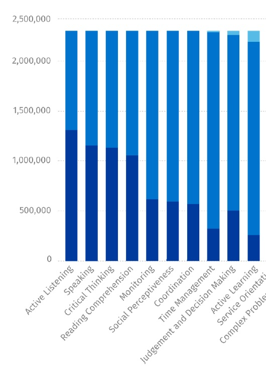

1.2 As competências necessárias na era digital


1.2.1 A crescente importância do desenvolvimento de competências
O conhecimento envolve dois componentes fortemente interligados, mas distintos: conteúdo e competências. O conteúdo inclui fatos, ideias, princípios, evidências e descrições de processos ou procedimentos. A maioria dos docentes, pelo menos nas universidades, é bem formada em conteúdo e possui uma compreensão profunda das áreas temáticas que leciona. A expertise no desenvolvimento de competências, no entanto, é outra questão. O problema aqui não é tanto que os docentes não ajudem os estudantes a desenvolver competências — eles o fazem — mas se essas competências intelectuais correspondem às necessidades dos trabalhadores do conhecimento e se é dado ênfase suficiente ao desenvolvimento de competências dentro do currículo.
1.2.2 As necessidades de uma sociedade digital
A previsão é sempre arriscada, mas geralmente as grandes tendências do futuro já podem ser vistas no presente. O futuro apenas amplificará as condições atuais, ou as condições atuais resultarão em uma transformação que já conseguimos antever, mas que ainda não chegou. Os exemplos são muitos:
- a Internet das Coisas, em que quase tudo está conectado digitalmente
- veículos e transportes autônomos
- volumes massivos de dados sobre nossas vidas pessoais sendo coletados e analisados para antecipar/prever/influenciar nosso comportamento futuro
- automação substituindo e/ou transformando o trabalho e o lazer humanos
- agências estatais e/ou oligopólios comerciais controlando o acesso e o uso de dados
- falta de transparência, distorção de mensagens e amplificação dessas distorções nas comunicações digitais.
Uma coisa é clara. Podemos, como indivíduos, simplesmente desistir e deixar todos esses desenvolvimentos nas mãos de entidades estatais ou comerciais para que os gerenciem em seus próprios interesses, ou podemos tentar nos preparar de modo a influenciar ou até controlar como esses desenvolvimentos são gerenciados, para o bem comum.
É isso que quero dizer quando falo em desenvolver competências para o século XXI, ou em preparar para uma sociedade digital. Temos a responsabilidade de garantir que nossos estudantes recebam uma educação suficiente para que compreendam esses problemas e tenham os meios para enfrentá-los. Esta é uma responsabilidade de todo educador, pois afeta todas as áreas do conhecimento.
Por exemplo, a professora de ciências precisa incutir em seus estudantes a capacidade de identificar fontes confiáveis e não confiáveis de dados científicos, e a capacidade de aplicar esse conhecimento de forma ética e em benefício da humanidade. Isso é uma responsabilidade especialmente importante para quem ensina ciências da computação. Precisamos ensinar sobre os perigos das consequências não intencionais ou desconhecidas das aplicações de inteligência artificial e das análises automatizadas de dados em massa, os potenciais vieses nos algoritmos e a necessidade de auditar e ajustar procedimentos automatizados para evitar consequências imprevistas, mas prejudiciais, antes que causem danos.
A aprendizagem digital (e não apenas on-line) tem um papel crítico a desempenhar, porque para desenvolver essas competências, a própria aprendizagem dos nossos estudantes precisa estar digitalmente integrada. Só dominando a tecnologia podemos controlá-la.
1.2.3 Quais competências?
As competências exigidas em uma sociedade do conhecimento incluem as seguintes (adaptado de Conference Board of Canada, 2014):
- competências de comunicação: além das habilidades tradicionais de comunicação — ler, falar e escrever de forma coerente e clara — precisamos acrescentar as competências de comunicação por mídias sociais. Isso pode incluir a capacidade de criar um vídeo curto no YouTube para demonstrar um processo ou fazer uma apresentação de vendas, a capacidade de alcançar pela Internet uma ampla comunidade de pessoas com as próprias ideias, de receber e incorporar feedback, de compartilhar informações de forma adequada e de identificar tendências e ideias de outras fontes;
- a capacidade de aprender de forma independente: isso significa assumir a responsabilidade de descobrir o que você precisa saber e onde encontrar esse conhecimento. Esse é um processo contínuo no trabalho baseado em conhecimento, porque a base de conhecimento está em constante mudança. A propósito, não me refiro necessariamente ao conhecimento acadêmico, embora este também esteja mudando; pode ser aprender sobre novos equipamentos, novas formas de fazer as coisas ou descobrir quem são as pessoas que você precisa conhecer para realizar o trabalho;
- ética e responsabilidade: isso é necessário para construir confiança (especialmente importante nas redes sociais informais), mas também porque comportamentos éticos e responsáveis são, em geral, mais eficazes a longo prazo em um mundo onde há muitos atores diferentes e um grau maior de dependência de outros para alcançar os próprios objetivos;
- trabalho em equipe e flexibilidade: embora muitos trabalhadores do conhecimento trabalhem de forma independente ou em empresas muito pequenas, dependem fortemente da colaboração e do compartilhamento de conhecimento com outros em organizações relacionadas, mas independentes. Em empresas pequenas, é essencial que todos os funcionários trabalhem em estreita colaboração, compartilhem a mesma visão da empresa e se ajudem mutuamente. Em particular, os trabalhadores do conhecimento precisam saber como trabalhar de forma colaborativa, virtual e à distância, com colegas, clientes e parceiros. O 'agrupamento' do conhecimento coletivo, a resolução de problemas e a implementação exigem um bom trabalho em equipe e flexibilidade para assumir tarefas ou resolver problemas que possam estar fora de uma definição estrita de função, mas que são necessários para o sucesso;
- habilidades de pensamento (pensamento crítico, resolução de problemas, criatividade, originalidade, elaboração de estratégias, por exemplo): de todas as competências necessárias em uma sociedade baseada no conhecimento, estas são as mais importantes. As empresas dependem cada vez mais da criação de novos produtos, novos serviços e novos processos para reduzir custos e aumentar a competitividade. Além disso, não são apenas nos cargos de alta gestão que essas competências são exigidas. Os profissionais de ofícios, em particular, precisam cada vez mais ser solucionadores de problemas, e não apenas seguir processos padronizados, que tendem a ser automatizados. Qualquer pessoa que lide com o público em uma função de serviço deve identificar necessidades e encontrar soluções adequadas. As universidades, em particular, sempre se orgulharam de ensinar tais competências intelectuais, mas a tendência a turmas maiores e maior transmissão de informações, especialmente na graduação, enfraquece essa premissa;
- competências digitais: a maioria das atividades baseadas em conhecimento depende muito do uso da tecnologia. No entanto, a questão central é que essas competências precisam estar integradas ao domínio do conhecimento em que a atividade ocorre. Isso significa, por exemplo, que agentes imobiliários precisam saber usar sistemas de informação geográfica para identificar tendências e preços de venda em diferentes localizações geográficas; soldadores precisam saber usar computadores para controlar robôs que inspecionam e reparam tubulações; radiologistas precisam saber usar novas tecnologias que 'leem' e analisam exames de ressonância magnética. Portanto, o uso da tecnologia digital precisa ser integrado e avaliado por meio da base de conhecimento da área temática;
- gestão do conhecimento: esta é talvez a mais abrangente de todas as competências. O conhecimento não apenas muda rapidamente com novas pesquisas, novos desenvolvimentos e a rápida disseminação de ideias e práticas pela Internet, mas as fontes de informação estão aumentando, com grande variabilidade na confiabilidade ou validade das informações. Assim, o conhecimento que um engenheiro aprende na universidade pode rapidamente se tornar obsoleto. Há tanta informação hoje na área da saúde que é impossível para um estudante de medicina dominar todos os tratamentos medicamentosos, procedimentos médicos e ciências emergentes, como a engenharia genética, mesmo em um programa de oito anos. Portanto, a gestão do conhecimento é a competência-chave em uma sociedade baseada no conhecimento: como encontrar, avaliar, analisar, aplicar e disseminar informações dentro de um contexto específico. Acima de tudo, os estudantes precisam saber como validar ou questionar fontes de informação. A gestão eficaz do conhecimento é uma competência que todos os egressos precisarão utilizar muito depois da graduação.
Em 2018, o Royal Bank of Canada publicou um relatório chamado 'Humans Wanted'. Esse relatório foi baseado em uma análise de grandes volumes de dados derivados de publicações de vagas de emprego ao longo de 12 meses no LinkedIn, na qual as competências reais solicitadas pelos empregadores foram identificadas e analisadas, e a partir das quais foi realizada uma análise da demanda por diferentes tipos de mão de obra.
A principal conclusão do relatório foi a de que haverá muitos empregos no futuro, mas eles exigirão competências diferentes das geralmente requeridas atualmente. Em particular, muitas das novas competências necessárias serão o que é chamado, de forma um tanto confusa, de soft skills, como escuta atenta, pensamento crítico, fluência digital, aprendizagem ativa, etc. (confuso, porque essas 'soft skills' são frequentemente tão difíceis de cultivar quanto as 'hard skills'.) São competências que a automação e a IA não conseguem facilmente replicar ou substituir, mas que serão necessárias na nova economia digital. O Royal Bank identificou as seguintes como competências-chave que estarão em alta demanda entre 2018 e 2023 (azul escuro = muito importante; azul mais claro = importante):



Duas das principais conclusões do relatório do Royal Bank foram as seguintes:
-
O sistema educacional, os programas de treinamento e as iniciativas do mercado de trabalho do Canadá são inadequadamente concebidos para ajudar os jovens canadenses a navegar nessa nova economia de competências.
-
Os empregadores canadenses geralmente não estão preparados — por meio de contratação, treinamento ou requalificação — para recrutar e desenvolver as competências necessárias para tornar suas organizações mais competitivas em uma economia digital.
1.2.4 Desenvolvendo competências
Quais métodos de ensino têm maior probabilidade de desenvolver soft skills? Na verdade, podemos aprender muito com as pesquisas sobre competências e seu desenvolvimento (ver, por exemplo, Fischer, 1980, Fallow e Stevens, 2000):
- o desenvolvimento de competências é relativamente específico ao contexto. Em outras palavras, as competências precisam estar integradas a um domínio do conhecimento. Por exemplo, a resolução de problemas na medicina é diferente da resolução de problemas nos negócios. Em primeiro lugar, é claro, a base de conteúdo usada para resolver os problemas é diferente. Menos compreendido, porém, é o fato de que processos e abordagens um tanto diferentes são usados para resolver problemas nesses domínios (por exemplo, a tomada de decisões na medicina tende a ser mais dedutiva, nos negócios mais intuitiva; a medicina é mais avessa ao risco, enquanto os negócios tendem a aceitar uma solução que contenha um elemento maior de risco ou incerteza). Integrar competências a um contexto específico, como uma disciplina acadêmica, é talvez o maior desafio para as instituições educacionais na era digital. Em que medida a capacidade de pensar criticamente sobre literatura inglesa se transfere para outras áreas do pensamento crítico, como análise política ou avaliação do comportamento de um colega no ambiente de trabalho? Em muitos casos, alguns elementos dessas soft skills se transferem bem, mas outras partes são mais específicas ao contexto. É preciso dar mais atenção ao que a pesquisa sabe sobre a transferência de competências e garantir que essas evidências influenciem a forma como ensinamos.
- os aprendizes precisam de prática — muitas vezes de muita prática — para alcançar domínio e consistência em uma determinada competência;
- as competências são frequentemente melhor aprendidas em passos relativamente pequenos, com 'saltos' que aumentam à medida que o domínio se aproxima;
- os aprendizes precisam de feedback regular para aprender competências de forma rápida e eficaz; o feedback imediato geralmente é melhor do que o tardio;
- embora as competências possam ser aprendidas por tentativa e erro sem a intervenção de um professor, tutor ou tecnologia, o desenvolvimento de competências pode ser muito aprimorado ou acelerado com intervenções adequadas — o que significa adotar métodos de ensino e tecnologias apropriados para o desenvolvimento de competências;
- veremos mais adiante que, embora o conteúdo possa ser transmitido com igual eficácia por uma ampla gama de mídias, o desenvolvimento de competências está muito mais vinculado a abordagens de ensino e tecnologias específicas.
Quais são as implicações disso não apenas para os métodos de ensino, mas também para o design curricular? Vale lembrar que, diferentemente das competências técnicas (competências), muitas soft skills de 'alto nível', como o pensamento crítico, são cumulativas e não têm um ponto final claro. Serena Williams continua vencendo não porque continua ficando mais rápida e forte do que jogadoras mais jovens, mas porque continua aprimorando suas habilidades (incluindo estratégia) a um nível que compensa a diminuição de sua força e velocidade.
As soft skills precisam ser desenvolvidas ao longo de um programa (na verdade, ao longo de toda uma vida) e não em um único curso. Como identificamos, então, como desenvolver, por exemplo, habilidades de pensamento crítico desde o primeiro ano até a conclusão do curso em uma determinada disciplina? Como o desenvolvimento de competências nas etapas posteriores se apoia no trabalho realizado anteriormente no programa?
1.2.5 Medindo competências
Outro desafio é a mensuração de competências. Certa vez, um colega me questionou quando eu disse que meus estudantes estavam aprendendo a pensar criticamente.
'Como você sabe?' ele perguntou.
Minha resposta foi: 'Eu sei quando vejo nas avaliações deles.'
'Mas como seus estudantes vão saber o que você está procurando se você não consegue descrevê-lo com antecedência?'
O Higher Education Quality Council of Ontario (HEQCO) publicou um relatório em 2018 que afirmava ser 'uma das primeiras grandes tentativas de medir competências relacionadas ao emprego em estudantes universitários e de faculdades em larga escala'. O segundo estudo utilizou um teste desenvolvido para avaliar a capacidade dos estudantes de analisar evidências, compreender implicações e consequências e desenvolver argumentos válidos.
O estudo do HEQCO concluiu que os estudantes do último ano tinham pontuações um pouco mais altas em letramento e numeramento do que seus colegas do primeiro ano, embora houvesse variação considerável entre os programas, mas pequena diferença entre as pontuações dos estudantes ingressantes e concluintes em habilidades de pensamento crítico, embora a habilidade de pensamento crítico também tenha mostrado variação considerável entre os programas.
Há diversas críticas possíveis a esse estudo. Um dos desafios que o estudo do HEQCO enfrentou foi encontrar formas válidas e confiáveis de avaliar soft skills. O primeiro estudo mediu as habilidades de letramento, numeramento e resolução de problemas de adultos usando cenários do cotidiano. Por que avaliar essas habilidades fora dos domínios do conhecimento em que foram ensinadas, dado a importância do contexto? As medições foram sensíveis o suficiente para realmente discriminar as diferenças no desenvolvimento de competências ao longo do tempo?
Não obstante, é preocupante que o HEQCO tenha constatado que, após quatro anos de estudo pós-secundário, não houve diferença perceptível nas habilidades de pensamento crítico. Isso se deve ao fato de esse conteúdo não estar sendo bem ensinado, ou porque os testes utilizados não eram válidos? Qualquer tentativa de identificar resultados de aprendizagem envolvendo competências exige a consideração, desde o início, de como essas competências podem ser avaliadas de forma válida. Os docentes não devem reclamar dos métodos de avaliação do HEQCO se não conseguirem justificar seus próprios métodos de identificação e avaliação de competências.
1.2.6 Competências e resultados de aprendizagem
Os estudos do Royal Bank of Canada e do HEQCO evidenciam que está se tornando cada vez mais importante definir resultados de aprendizagem em termos de aquisição de competências. Ambos são estudos valiosos que identificam algumas das questões em torno do desenvolvimento do conhecimento e das competências que os estudantes precisarão para ter sucesso, não apenas no mercado de trabalho, mas na vida em geral nos últimos três quartos deste século. No entanto, os dois relatórios mal tocaram a ponta desse iceberg particular. Nenhum deles, por exemplo, tentou sugerir como os estudantes podem desenvolver essas competências ou o que os docentes precisam fazer para ajudar os estudantes a desenvolvê-las.
Ao desenvolver currículos — em termos de decidir não apenas o que, mas também como ensinar — precisamos fazer as seguintes perguntas:
(a) os programas estão identificando claramente os resultados de aprendizagem esperados de um programa de estudos?
(b) esses resultados de aprendizagem levam em conta suficientemente as competências, além do conteúdo/tópicos?
(c) esses resultados de aprendizagem são relevantes para uma sociedade digital?
Em outras palavras, temos um grande desafio pedagógico em várias dimensões:
- identificar as soft skills mais importantes que os estudantes precisarão (embora o relatório do RBC vá um pouco nessa direção)
- identificar a melhor forma de ensinar tais soft skills
- avaliar a habilidade dos estudantes em soft skills (embora o relatório do HEQCO vá igualmente um pouco nessa direção)
- identificar em que medida as soft skills são generalizáveis.
O ponto central aqui é que conteúdo e competências estão estreitamente relacionados, e tanta atenção precisa ser dada ao desenvolvimento de competências quanto à aquisição de conteúdo, para garantir que os aprendizes se formem com o conhecimento e as competências necessários para a era digital.
1.2.7 Repensando o ensino e a aprendizagem
Estas são essencialmente questões curriculares e pedagógicas. Isso significa repensar não apenas o currículo e como o ensinamos, mas também o papel que a tecnologia pode desempenhar no desenvolvimento de tais competências. Como a tecnologia pode aumentar a empatia e a compreensão (por exemplo, criando ambientes virtuais ou simulações em que os estudantes desempenham o papel de outras pessoas)? Como a tecnologia pode ser usada para fornecer cenários que permitam o desenvolvimento e o teste de competências em um ambiente seguro? Como a tecnologia pode ser usada para permitir que os estudantes resolvam problemas do mundo real?
Há um milhão de respostas possíveis para essas perguntas, e elas precisam ser respondidas por docentes e professores — e pelos próprios aprendizes — com profundo conhecimento de sua área de saber. Mas o conhecimento da disciplina por si só não é suficiente se quisermos fazer dos últimos três quartos do século XXI um período em que todas as pessoas possam prosperar e se sentir livres.
Os Capítulos 2 e 3 exploram diferentes métodos de ensino e analisarão como esses métodos acomodam o desenvolvimento de competências. Mas na próxima seção discuto os perigos de vincular o desenvolvimento de competências de forma muito próxima às necessidades imediatas do mercado de trabalho.
Referências
The Conference Board of Canada (2014) Employability Skills 2000+ Ottawa ON: Conference Board of Canada
Fallow, S. and Stevens, C. (2000) Integrating Key Skills in Higher Education: Employability, Transferable Skills and Learning for Life London UK/Sterling VA: Kogan Page/Stylus
Finnie, R. et al. (2018) Measuring Critical-thinking Skills of Postsecondary Students Toronto ON: HEQCO
Fischer, K.W. (1980) A Theory of Cognitive Development: The Control and Construction of Hierarchies of Skills Psychological Review, Vol. 84, No. 6
Royal Bank of Canada (2018) Humans Wanted Toronto ON: Royal Bank of Canada
Weingarten, H. et al. (2018) Measuring Essential Skills of Postsecondary Students: Final Report of the Essential Adult Skills Initiative Toronto ON: HEQCO

Um elemento de áudio foi excluído desta versão do texto. Você pode ouvi-lo on-line aqui: https://pressbooks.bccampus.ca/teachinginadigitalagev2/?p=34
Atividade 1.2 Que competências você está desenvolvendo em seus estudantes? Parte 1
1. Escreva uma lista de competências que você esperaria que os estudantes desenvolvessem como resultado de cursar suas disciplinas.
2. Compare essas competências com as listadas acima. Elas se correspondem bem?
3. O que você faz como docente para que os estudantes pratiquem ou desenvolvam as competências que você identificou?
Esta atividade não tem feedback, mas veja o podcast acima.